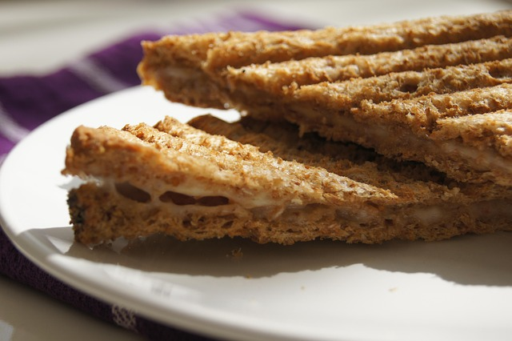

Grilled Cheese
Home

Description
A simple hardy meal for when in a time cruch
Ingredients
- White bread or any of your choosing that can handle the toasting
- Pick between butter or mayonaise
- Sliced cheedar is used for this recipe but most sliced cheese will work
Steps
- Butter the bread on one side and place the bread butter-side down on a hot skillet.
- Top with cheese, then place another slice of bread on top (butter side up)
- Cook until the bottom side is lightly browned, the flip.
- Continue cooking until the cheese is melted
Grilled Cheese Sides
- Fresh Tomato soup
- Easy Homemade Chilli
- Italian Sausage Soup with Torterllini